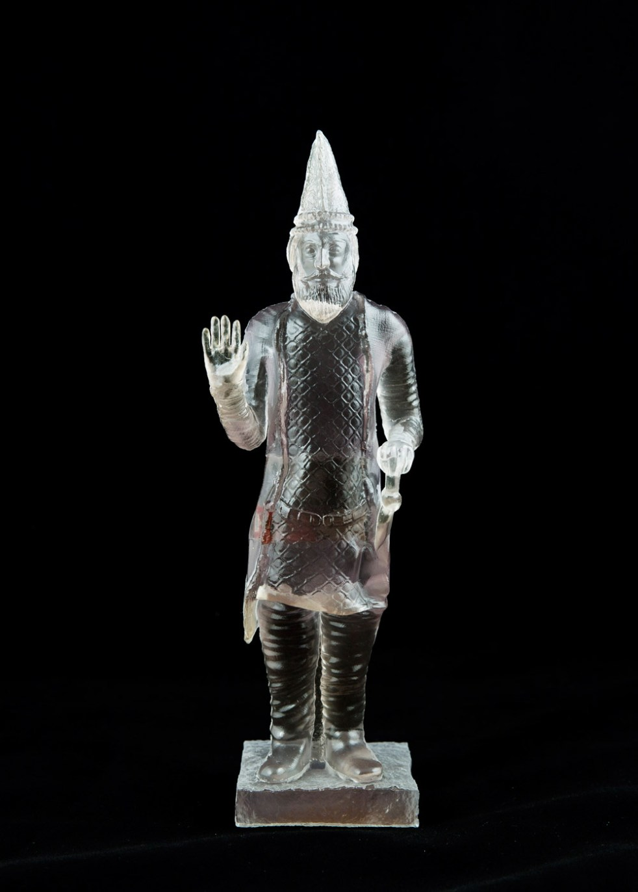
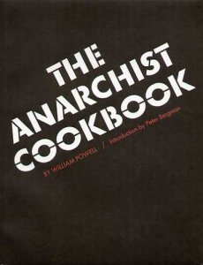
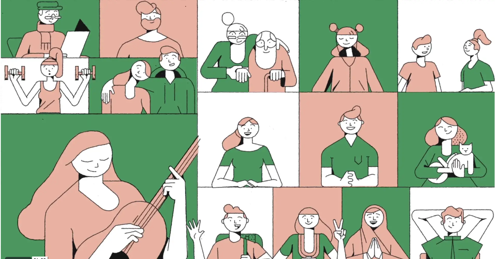
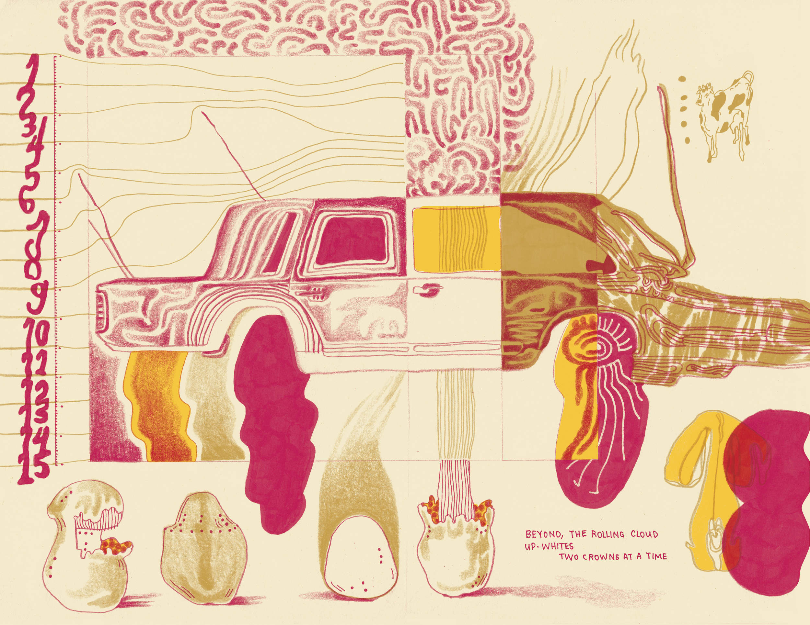

This week - Illustration Inspiration
Lecture and exploration of digital ownership. Also looking at some
illustrators I like while working on my illustration final projects.

Lecture by artist Morehshin Allahyari - spoke a lot about ownership of digital media, and
contemporary digital colonialism. Does a lot of strange, cool 3d work. Specifically interesting
were her digital models / reproductions of sculptures destroyed by ISIS.
The project

Anarchist Cookbook: think about instructions and tools (relating to other interactive
projects with instructions). How can instructions be projects in themselves. Manifestos?
CONDITIONAL DESIGN MANIFESTO

Illustration Studio
Illustration Studio
Check out work more, interesting stuff on gender, feminism and AI.

Cloud House Project
A friend / student of Shreyas. Cool illustrations.
Back Home